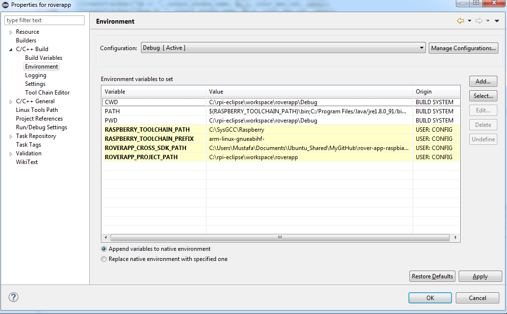
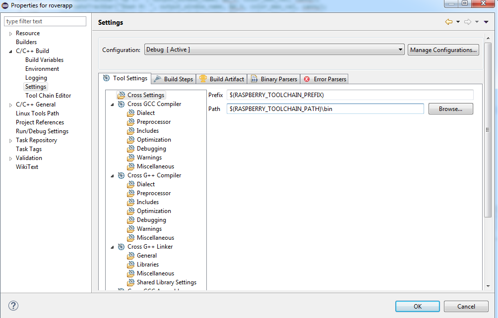
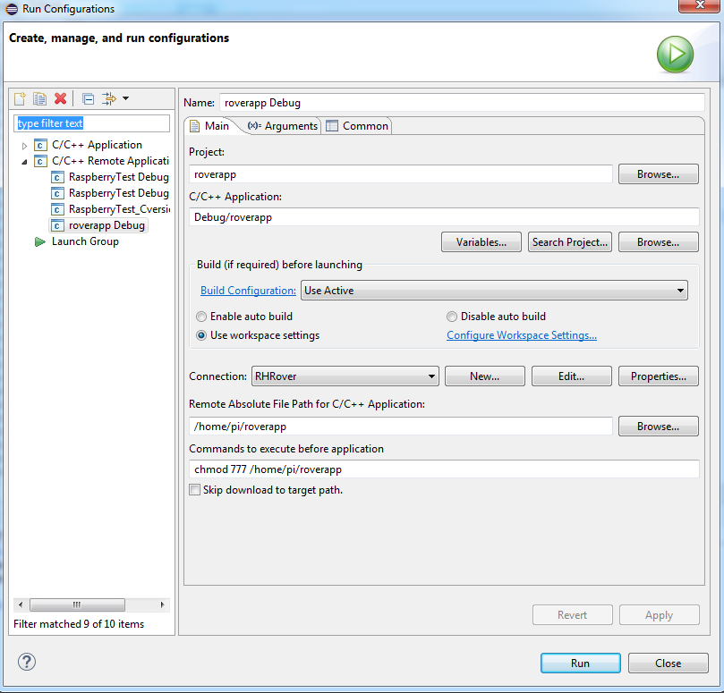
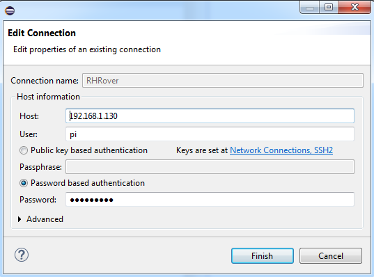
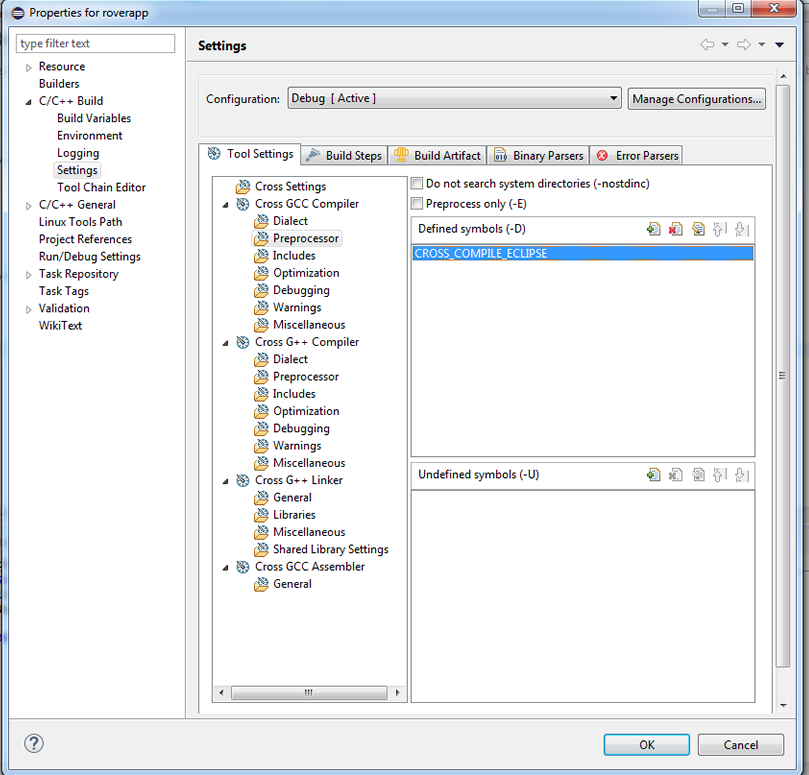
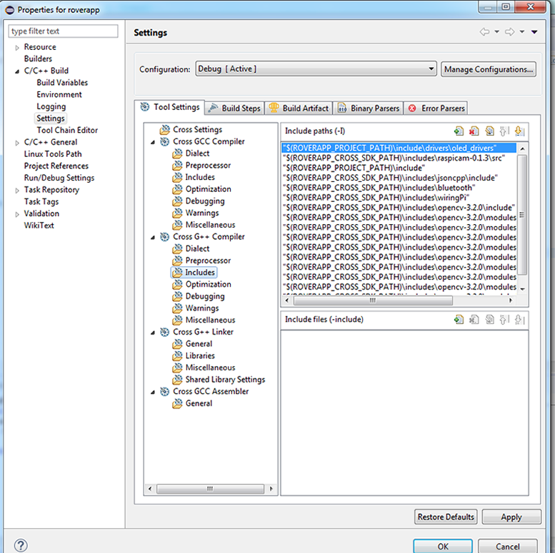
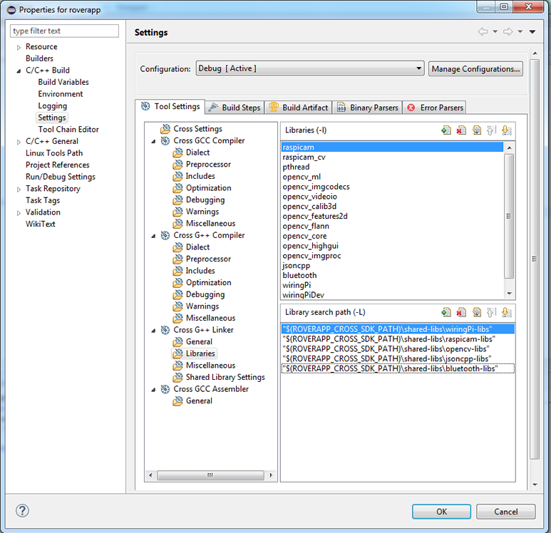

8. Cross Development in Raspbian¶
8.1. Roverapp Software Development Kit (SDK) Extension for Raspbian¶
Roverapp Software Development Kit (SDK) Extension features include files and library files for the dependencies of the Rover for Cross development. While it is tested with SysGCC Cross toolchain for Raspberry Pi, it is able to work with many others.
Note
Roverapp Software Development Kit (SDK) Extension for Raspbian is maintained under the following Git repository: https://github.com/app4mc-rover/rover-app-raspbian-cross-sdk.
8.2. Cross Development with Windows using Eclipse CDT and rover-app-raspbian-cross-sdk¶
In this section, cross development using Eclipse CDT IDE in Windows platform is explained.
8.2.1. Step 1: Windows Toolchain Setup¶
Raspberry Pi toolchain installations for Windows are provided in this website. Download raspbian-jessie or raspbian-stretch toolchain to match which distro used in the rover.
8.2.2. Step 2: Downloading and Installing Eclipse¶
Next step is to download the Eclipse CDT. Follow these steps :Eclipse IDE Setup.
8.2.3. Step 3: Setting Up Cross Compiler in Eclipse¶
Now that Eclipse is running, the next step is to set up the cross compiler aligned with the Raspberry Pi toolchain : Cross Compiler Setup.
Warning
Use roverapp for the project name while creating a new project.
8.2.4. Step 4: Downloading rover-app¶
Now that your project named roverapp exists, you can download or clone roverapp repository contents and put it in your project folder. Example way to achieve this in Linux is given below:
cd /path/to/your/project git clone https://github.com/app4mc-rover/rover-app.git cp -r rover-app/* . rm -rf rover-app
8.2.5. Step 5: Downloading rover-app-raspbian-cross-sdk¶
To start using the SDK extension, download or clone the contents of the Git repository to a known location of your choice.
8.2.6. Step 6: Configuring Environment Variables¶
Paths discussed in this documentation are given relatively. Some environment variables including these paths need to be declared in Eclipse.
To achieve this, go to Properties for your project > C/C++ Build > Environment. Following variables should be declared:
- RASPBERRY_TOOLCHAIN_PREFIX
- Value: arm-linux-gnueabihf-
- RASPBERRY_TOOLCHAIN_PATH
- Example Value: C:\SysGCC\Raspberry
- ROVERAPP_PROJECT_PATH
- Example Value: C:\path\to\your\project\roverapp
- ROVERAPP_CROSS_SDK_PATH
- Example Value: C:\path\to\rover-app-raspbian-cross-sdk
An example declaration of those environment variables are shown in the following image:
{kind=link}
8.2.7. Step 7: Cross Settings¶
To make sure Eclipse CDT knows about your cross development toolchain, Cross settings must be completed as shown below under Properties for your project > C/C++ Build > Settings > Tool Settings > Cross Settings:
{kind=link}
8.2.8. Step 8: Run Configurations¶
From Run > Run Configurations, create a new run configuration and apply the following changes.
{kind=link}
Under Connection in Run Configurations, enter your SSH credentials.
{kind=link}
Warning
In order to avoid certain authentication problems, connecting as root can be considered.
8.2.9. Step 9: Editing Preprocessor Definitions (-D)¶
Rover-app software is designed so that it compiles different files using different compilers. When cross debugging using Eclipse CDT, CROSS_COMPILE_ECLIPSE preprocessor definition must be declared.
To achieve this, locate to Properties for your project > C/C++ Build > Settings > Tool Settings > Cross GCC Compiler > Preprocessor and Properties for your project > C/C++ Build > Settings > Tool Settings > Cross G++ Compiler > Preprocessor and add the preprocessor definition as shown below:
{kind=link}
8.2.10. Step 10: Adjusting Include Paths (-I)¶
Include paths for the GNU toolchain should be specified in order to compile both internal and precompiled libraries. To do this with rover-app-raspbian-cross-sdk following steps should be done:
- Go to Properties for your project > C/C++ Build > Settings > Tool Settings > Cross GCC Compiler > Includes and add the following to Include Paths (-I)
- $(ROVERAPP_PROJECT_PATH)\include
- $(ROVERAPP_CROSS_SDK_PATH)\includes\raspicam-0.1.3
- $(ROVERAPP_CROSS_SDK_PATH)\includes\i2c-dev
- $(ROVERAPP_CROSS_SDK_PATH)\includes\paho-mqtt
- Go to Properties for your project > C/C++ Build > Settings > Tool Settings > Cross G++ Compiler > Includes and add the following to Include Paths (-I)
- $(ROVERAPP_PROJECT_PATH)\include\drivers\oled_drivers
- $(ROVERAPP_CROSS_SDK_PATH)\includes\raspicam-0.1.3
- $(ROVERAPP_PROJECT_PATH)\include
- $(ROVERAPP_CROSS_SDK_PATH)\includes\jsoncpp\include
- $(ROVERAPP_CROSS_SDK_PATH)\includes\bluetooth
- $(ROVERAPP_CROSS_SDK_PATH)\includes\wiringPi
- $(ROVERAPP_CROSS_SDK_PATH)\includes\opencv-3.2.0\include
- $(ROVERAPP_CROSS_SDK_PATH)\includes\opencv-3.2.0\modules\calib3d\include
- $(ROVERAPP_CROSS_SDK_PATH)\includes\opencv-3.2.0\modules\features2d\include
- $(ROVERAPP_CROSS_SDK_PATH)\includes\opencv-3.2.0\modules\flann\include
- $(ROVERAPP_CROSS_SDK_PATH)\includes\opencv-3.2.0\modules\imgcodecs\include
- $(ROVERAPP_CROSS_SDK_PATH)\includes\opencv-3.2.0\modules\ml\include
- $(ROVERAPP_CROSS_SDK_PATH)\includes\opencv-3.2.0\modules\videoio\include
- $(ROVERAPP_CROSS_SDK_PATH)\includes\opencv-3.2.0\modules\core\include
- $(ROVERAPP_CROSS_SDK_PATH)\includes\opencv-3.2.0\modules\highgui\include
- $(ROVERAPP_CROSS_SDK_PATH)\includes\opencv-3.2.0\modules\imgproc\include
- $(ROVERAPP_CROSS_SDK_PATH)\includes\paho-mqtt
At the end, it should look like the following (roughly):
{kind=link}
8.2.11. Step 11: Specifying Precompiled Libraries to be Linked (-l) and Library Search Paths (-L)¶
Precompiled ARM-compiled binaries presented in the SDK extension such as shared object files .so, archive files .a, object files .o must be declared in the Eclipse CDT as a next step.
To achieve this using the rover-app-raspbian-cross-sdk, following steps must be performed:
- Go to Properties for your project > C/C++ Build > Settings > Tool Settings > Cross G++ Linker > Libraries and add following to the Libraries (-l):
- raspicam
- raspicam_cv
- pthread
- opencv_ml
- opencv_imgcodecs
- opencv_videoio
- opencv_calib3d
- opencv_features2d
- opencv_flann
- opencv_core
- opencv_highgui
- opencv_imgproc
- jsoncpp
- bluetooth
- wiringPi
- wiringPiDev
- paho-mqtt3a
- paho-mqtt3as
- paho-mqtt3c
- paho-mqtt3cs
- In the same window, add following to the Library search path (-L):
- $(ROVERAPP_CROSS_SDK_PATH)\shared-libs\wiringPi-libs
- $(ROVERAPP_CROSS_SDK_PATH)\shared-libs\raspicam-libs
- $(ROVERAPP_CROSS_SDK_PATH)\shared-libs\opencv-libs
- $(ROVERAPP_CROSS_SDK_PATH)\shared-libs\jsoncpp-libs
- $(ROVERAPP_CROSS_SDK_PATH)\shared-libs\bluetooth-libs
- $(ROVERAPP_CROSS_SDK_PATH)\shared-libs\paho-mqtt-libs
Warning
Be sure to add include paths to the respective sections Assembly, GCC, G++ depending on which compiler is used for which packages.
Warning
Be sure that every precompiled library that will be compiled and linked must be already installed in rover’s Raspbian/Linux environment. Libraries are found in /usr/lib and /usr/local/lib.
A shared library can be searched by making use of the following command (for example, opencv_core):
sudo find / -name *opencv_core*so*
At the end, it should look like the following (roughly):
{kind=link}
8.2.12. Step 12: Specifying Additional Linker Flags¶
Be sure to add the following under Project Properties for your project > C/C++ Build > Settings > Tool Settings > Cross G++ Linker > Linker Flags:
-Wl,-rpath-link,"$(RASPBERRY_TOOLCHAIN_PATH)\arm-linux-gnueabihf\sysroot\lib\arm-linux-gnueabihf"
Warning
To observe which libraries are linked, you can activate verbose output, by the following Linker Flags content:
-Wl,-verbose,-rpath-link,"$(RASPBERRY_TOOLCHAIN_PATH)\arm-linux-gnueabihf\sysroot\lib\arm-linux-gnueabihf"